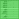

Необходимые расширения для конфиденциальности (и прочего)
- Введение -- Рекомендуемые аддоны, повышающие конфиденциальность -
- uMatrix -
- WebRTC Control -
- Decentraleyes -
- Smart HTTPS -
- Claire -
- Single ClickClearer -
- Аддоны для конфиденциальности, имеющие существенные недостатки -
- KB SSL Enforcer -
- HTTPS Everywhere -
- uBlock Origin, AdBlock Plus, AdGuard, Disconnect и пр. -
- NoScript -
- Privacy Badger -
- Ghostery -
- LibreJS -
- VPN-аддоны -
- Переключатели прокси -
- Другие полезные аддоны -
- Saka Key -
- I don't care about cookies -
- LinkBot -
- Archiveror -
- Stylus -
Введение
Если вы прочли мою статью Как выбрать браузер для повседневного использования, то уже знаете, что большинство функций в них обеспечивается аддонами (расширениями). Они настолько важны, что пользуясь ими долгое время, вы не сможете представить, что браузер может быть работоспособен и без них. Какие же расширения стоит устанавливать, а какие лучше не трогать? Это вы и узнаете, прочитав данную статью.
Рекомендуемые аддоны, повышающие конфиденциальность
 uMatrix
Говоря прямо, это САМЫЙ НЕОБХОДИМЫЙ аддон, без которого я даже не выйду в Интернет. Чтобы понять почему, посмотрим на то, как устроена Сеть. Посещая любой сайт, вы отправляете ему запрос. Сайт может состоять из множества файлов, таких как картинки, таблицы стилей или скрипты (которые в свою очередь отправляют СВОИ запросы). Более того, он может пытаться соединиться с другими сайтами (что называется запросами третьих сторон). Таким образом, посещая всего один сайт, вы можете иметь дело с сотнями самых разнообразных запросов. И в конце концов большинство проблем, связанных с конфиденциальностью, сводится к таким запросам, осуществляемым через браузер с целью сбора персональных данных. Тогда получается, что для предотвращения отслеживания нужно отключить определённые виды запросов. Хорошо, но причём же тут uMatrix?
uMatrix разделяет все запросы на восемь категорий: Куки, CSS (таблицы стилей), изображения, мультимедиа (аудио- и видеофайлы), скрипты, XHR (запросы от скриптов), фреймы (включение других сайтов), и другое (всё остальное). Плюс две подкатегории: запросы от самого сайта и от третьих сторон. Что это значит? Прежде всего то, что определённые типы запросов могут навредить вашей конфиденциальности больше, чем другие, и посредством uMatrix можно отключить их глобально, а затем разрешить их только на тех сайтах, которые вы укажете.
Запросы, больше всего ответственные за отслеживание, относятся к третьим сторонам, и особенно к скриптам. Так возьмём и заблокируем их. Теперь ни один сайт, содержащий скрипты от facebook, не сможет вас отслеживать - но если вы разрешите эти скрипты НА САМОМ facebook, вы всё ещё сможете им пользоваться - просто он больше не сможет нигде за вами следить. Другой пример - гугловская ReCaptcha. Можно разрешить её повсеместно - а можно, в случае если вам на неё наплевать и она вам нужна для доступа к одному сайту здесь и сейчас - разрешить её только для этого самого сайта.
Но защита от отслеживания - не единственная функция uMatrix. С его помощью возможно практически всё - удаление мусора со страниц (пресловутой "рекламы"), блокирование надоедливых всплывающих окон с предложением "зарегистрироваться на сайте", сокрытие вставленных видеороликов и т. д. А если вы решите, что хотите оставить возможность смотреть видео на своём любимом сайте и нигде больше, можете избирательно разрешить показ роликов только на нём. Самое замечательное в uMatrix то, что вы можете сначала глобально запретить все запросы, а затем разрешить только некоторые из них, по мере надобности. Расширение даёт вам практически полный контроль над пребыванием в Интернете, обладая при этом интуитивно понятным интерфейсом. Конечно, потребуется время на то, чтобы научиться его использовать и настроить под свои потребности, но, учитывая тот уровень свободы, который вы получите, оно того стоит - кроме того, на первых порах можно всё не блокировать - запрет одних только скриптов от третьих сторон и куки возымеет значительный эффект. Без этого аддона контроль над Интернетом снова будет в руках рекламщиков и аналитиков - они будут решать за вас, что и когда вы должны там видеть. Существуют аддоны с частично схожими функциями, но все они имеют большие недостатки, как мы убедимся позже. uMatrix поддерживают браузеры, основанные на Chrome или Firefox (для Pale Moon есть форк под названием eMatrix).
 WebRTC Control
WebRTC Control
Если вы пользуетесь Tor или определёнными VPN, технология WebRTC, включённая по умолчанию во многих браузерах, спровоцирует утечку вашего IP-адреса, нивелируя вашу анонимность. С помощью этого расширения вы можете одним кликом выключить (или включить) WebRTC и избежать утечек. Доступно для браузеров на Chrome или Firefox (Pale Moon автоматически предотвращает утечку IP через WebRTC, и поэтому не нуждается в этом расширении).
 Decentraleyes
Decentraleyes
Ещё один очень простой аддон. Есть скрипты, необходимые для нормальной работы многих сайтов (jQuery, некоторые скрипты google и т. п.), но в то же время они за вами следят. Как решить проблему? Хранить скрипты локально и делать запросы к этим копиям! Этим и занимается Decentraleyes. Может конфликтовать с uMatrix. Решение? Вкратце, uMatrix не должен "перехватывать" запросы, которые собирается подменить Decentraleyes, поэтому нужно разрешить некоторые домены в uMatrix (эти правила должны сработать). Аддоны, форсирующие использование HTTPS, тоже могут пытаться перехватить запросы - чтобы предотвратить это, устанавливайте Decentraleyes ПОСЛЕ них. Поддерживается браузерами на основе Chrome и Firefox, а также Pale Moon. Итак, это были три расширения, которые я считаю незаменимыми инструментами достижения конфиденциальности (а поскольку WebRTC нужен только для браузеров на Chrome, Firefox может обойтись только двумя из них). Тем не менее, дальше я расскажу ещё о нескольких вещицах, которые тоже могут оказаться полезными.
 Smart HTTPS
Smart HTTPS
Незамысловатый аддон. Предполагает, что любой сайт поддерживает SSL и пробует осуществить зашифрованное соединение. Если в ходе этого возникает ошибка (другими словами, сайт не поддерживает SSL), сайт загружается через обычный протокол HTTP. Таким образом, незашифрованные соединения вообще не происходят, если это возможно. К сведению: иногда это расширение ошибочно вносит сайты в список не поддерживающих HTTPS, например в случае потери доступа к сети. Из-за этого расширение не даёт полной защиты от незашифрованных запросов по умолчанию, но оно всё равно лучшее в своём роде. К тому же, вы можете отключить автоматическое занесение сайтов в такой список, и тогда аддон будет всегда проверять возможность зашифрованного соединения. Таким образом, насколько мне известно, можно добиться идеальной защиты. Поддерживается браузерами на Firefox и Chrome. Если хотите использовать его на Pale Moon, загрузите старую версию из Classic Add-ons Archive, потому что последняя версия построена на WebExtensions.
Claire
Поскольку любой сайт с Cloudflare расшифровывает ваши SSL-соединения, может оказаться полезным знать, когда именно это происходит. Это расширение добавит индикатор-облачко, который загорится, если на сайте есть CF. Оно не предотвратит расшифровку, но по крайней мере вы будете знать что ваше SSL не работает. Факт, что расширение не решает проблемы, а только информирует о ней, ограничивает его полезность. Доступно для браузеров на Chrome и Firefox. Имейте в виду, что аддон разработала сама Cloudflare - если вы им не доверяете или хотите использовать что-то другое, есть вариант под названием cf-detect, но он работает только на браузерах семейства Firefox. Я не cмог найти похожего расширения для Pale Moon.
 SingleClick Cleaner
SingleClick Cleaner
Не имеющий прямого отношения к приватности, но очень полезный аддон. Позволяет вам указать, какие данные нужно стереть (куки, список загрузок, история посещения сайтов и пр.) и затем избавиться от них одним щелчком мыши в любое время. Не поддерживается браузерами на Firefox, но для них есть похожие расширения (хотя я не знаю, насколько они удобны). К сожалению, нет эквивалентов для Pale Moon.
Аддоны для конфиденциальности, имеющие существенные недостатки
KB SSL Enforcer
Использовал долгое время, но недавно прочитал их ЧаВО, где написано, что "KB SSL Enforcer ищет SSL во время самого первого посещения страницы, и на этот период не способен предотвратить незашифрованоое соединение". То есть первый небезопасный запрос не будет перехвачен. Хуже чем Smart HTTPS.
HTTPS Everywhere
Полагается на список доменов, так что если сайт не в списке, запрос к нему не будет шифроваться SSL. Также проигрывает Smart HTTPS, который всегда будет пытаться использовать SSL, если это возможно.
 uBlock Origin, AdBlock Plus, AdGuard, Disconnect и пр.
uBlock Origin, AdBlock Plus, AdGuard, Disconnect и пр.
Для их работы необходимы огромные, постоянно устаревающие списки блокируемых элементов. Так, AdGuard кичится тем, что имеет "более 1 800 000 вредоносных сайтов в чёрном списке". Не вижу особого повода для гордости, когда через uMatrix одним движением можно заблокировать целый класс запросов, благодаря чему все эти "адблоки" перестают быть нужными. Используя их, вы также доверяетесь третьим лицам, решающим за вас что следует блокировать, вместо того, чтобы взять наконец контроль в свои руки. Если в этих списках чего-то нет, блокироваться оно не будет, и попросту невозможно составить полный список такого содержимого. Рекламщики уже давно пытаются яростно бороться с этими списками (BlockAdBlock и пр.). В ответ на это появились пользовательские скрипты и другие меры противодействия, блокирующие BlockAdBlock, против которых рекламщики в свою очередь изобрели новые контрмеры... uMatrix просто обходит стороной эту бессмысленную войну. С правильно настроенным uMatrix, вам не придётся беспокоиться о грязных уловках аналитиков и рекламщиков, поскольку всё будет заблокировано до тех пор, пока вам не понадобится что-то разрешить (принцип "презумпции виновности" вместо "презумпции невиновности"). "Адблоки" проще использовать (работают сразу после установки), но в итоге они слабее чем uMatrix, если вы научитесь им пользоваться. Если вам очень хочется использовать блокировщик рекламы по списку, выбирайте Disconnect как меньшее из зол. У него хороший интерфейс, показывающий сэкономленное время и трафик, а также имеется режим детализации отслеживания. И всё-таки, лучше изучите uMatrix. Немного о uBlock Origin: в нём имеются дополнительные функции сокрытия элементов и отключения WebRTC - но в блокировке содержимого uMatrix нет равных.
 NoScript
NoScript
Вредоносный аддон! (архив) К тому же он уступает uMatrix, поскольку лишь позволяет блокировать определённые скрипты глобально, не принимая во внимание откуда идёт запрос (то есть вы не сможете запретить скрипт X на одном сайте, и разрешить его на другом). А также он не поддерживает браузеры семейства Chrome...
 Privacy Badger
Privacy Badger
Наверно, худшее из всех расширений "для приватности",
хотя на вид кажется самым продвинутым и использует ИИ для обнаружения шпионских скриптов.
Но на поиск чего-либо уходит слишком много времени (вы трижды успеете изучить uMatrix...), и в основном слежка всё равно будет работать.
По словам разработчиков, Privacy Badger пытается обнаружить такие технологии отслеживания, как
куки с идентификаторами, локальные "супер-куки" и отпечатки Canvas.
Но это лишь три из множества других способов слежки за пользователями,
и всё остальное PB упустит. Также, PB специализируется только на слежке, но существуют и другие кандидаты для блокирования. Может быть, вам не хочется смотреть на случайные фотографии из Twitter'а во время посещения других сайтов (к тому же через них тоже можно следить за пользователями). Странно, но PB всегда отправляет заголовок Do Not Track, который на самом деле помогает вас отслеживать (ухудшает ваш отпечаток). Не ведитесь на этот выпендрёж и используйте uMatrix, единственно необходимый блокировщик содержимого.
 Ghostery
Ghostery
Ещё один очень слабый аддон. Он показывает сколько элементов на сайте вас отслеживает, а затем применяет алгоритм чтобы заблокировать лишь некоторые из них. Он оставляет, к примеру, DoubleClick, кнопки соцсетей, Google AdSense, много сайтов аналитики и прочее. Вы можете выбрать полную или частичную блокировку содержимого на всех или некоторых сайтах, но по умолчанию блокированием управляет алгоритм. Ghostery также имеет функцию удаления рекламы, которая работает по тому же принципу, но в этом случае даже не уведомляет о том, что именно было заблокировано. Можно "установить ограничение на сайт", и следящие элементы на нём будут заблокированы, но эта опция не затрагивает рекламу, так что защита оказывается неэффективной. А включать эту опцию нужно для каждого сайта отдельно. Также Ghostery отправляет нечто под названием "Human Web Data" своей компании-владельцу Cliqz по умолчанию. Так или иначе, uMatrix намного лучше.
 LibreJS
LibreJS
Скажем прямо - это расширение вообще не несёт в себе приватности, функциональности, удобства или какой-либо пользы. Оно лишь призвано удовлетворять особый вид аутизма под названием фритардизм. Так что это вообще за аддон? Оказывается, он должен блокировать "несвободный и нетривиальный" JavaScript на сайтах, но критерии блокировки путанные и нечёткие. LibreJS проверяет, придерживается ли скрипт "свободной лицензии", и если нет, насколько он "тривиален" чтобы проигнорировать проблему с лицензией. Всё это значительно снижает скорость загрузки сайтов, так как расширение старается проверить каждый скрипт на сайте на соответствие ряду правил, определяющих "тривиальность". И если вы нажмёте на кнопку расширения, оно продемонстрирует вам малопонятный отчёт о якобы "нетривиальных" скриптах, которые были заблокированы. Затем вы можете внести их в белый список - настоящий Сизифов труд. Если скрипт был заблокирован, появляется гигантское всплывающее окно с надписью "ПОЖАЛОВАТЬСЯ", где вас просят связаться с владельцами сайта, чтобы они могли убрать несвободные скрипты (разве это когда-нибудь удавалось?). Пахнет крестовым походом, в котором я не желаю принимать никакого участия. uMatrix в тысячи раз опрятнее, быстрее (на самом деле даже заметно ускоряет загрузку страниц), мощнее и предано пользователю, а не идеологии. Не пользуйтесь этой штуковиной, когда есть uMatrix!
 Расширения типа прокси / "VPN"
Расширения типа прокси / "VPN" 
Сюда относятся Browsec, Hola, PureVPN, ZenMate, Tunnelbear и множество других. Они не только полны утечек (архив), но и вообще не являются настоящими VPN. Это означает, что они обрабатывают только часть сетевых запросов (а именно те, что проходят через ваш браузер). Помимо этого имеется ряд других проблем как ограниченный трафик, необходимость оплаты по прошествии пробного периода, доставучие всплывающие окна и даже затягивание в самый настоящий ботнет (архив) - становится ясно, что лучше ими никогда не пользоваться. Используйте настоящий VPN - бесплатные и качественные услуги предоставляют SigaVPN и RiseUp.
Переключатели прокси 
На самом деле в этих расширениях нет ничего плохого - я даже рекомендовал когда-то Proxy SwitchyOmega. Просто дело в том, что использовать VPN намного проще и лучше, чем возиться с разными прокси (включая Tor), так что эти аддоны утратили свою полезность.
Другие полезные аддоны
Saka Key
Позволяет редактировать горячие клавиши (функция, которая отсутствует по умолчанию в Chrome и Firefox! Хотя она есть даже в долбаном elinks...). Но что важнее, расширение позволяет открывать ссылки без использования мыши. Нажмите F (находясь в power mode) чтобы назначить каждой ссылке, видимой на сайте, сочетания из букв, а затем наберите эти сочетания клавишами. Бац! И навигация по Интернету происходит теперь целиком через клавиатуру. Незаменимая вещь, когда у вас свободна только одна рука, или если у вас ноутбук с хреновым тачпадом. Работает под браузерами Chrome и Firefox. Vimium (из Classic Addons Archive) для Pale Moon работает даже лучше.
 I don't care about cookies
I don't care about cookies
Не так давно в ЕС с какого-то перепугу решили требовать от сайтов доставать всех сообщениями почти в полэкрана с "информацией" о файлах куки, которую все и так уже знают. Этот аддон убирает такие всплывающие сообщения. Конечно, uMatrix их тоже устранит если вы запретите скрипты на этих сайтах, но если вам вдруг нужны какие-нибудь функции от данных скриптов (например на flashscore), этот аддон будет очень полезен. Доступно как для браузеров на Chrome или Firefox, так и для Pale Moon. Примечание: может "сломать" некоторые сайты (например кнопку удаления на Neocities).
LinkBot
Делает любой текст со ссылкой кликабельным (например адреса без http://, или адреса электронной почты). Не нужно больше копировать всё в адресную строку! Очень удобно. Раньше для этой цели использовал Clickable Links, но заметил что некоторые ссылки оно пропускает, поэтому решил найти что-то получше. Несовместимо с браузерами на Firefox - там можно использовать Linkificator. Примечание: "ломает" некоторые сайты, например те, что используют форму логина от RainLoop.
 Archiveror
Archiveror
Это расширение позволяет моментально архивировать текущую страницу на archive.fo, web.archive.org, perma.cc или webcitation.org. Можно использовать клавиатурное сочетание (Alt+Shift+Y).
 Stylus
Stylus
Форк старой версии расширения Stylish, до того как оно стало шпионским ПО (архив). Это расширение позволит вам создать персональный файл CSS для любого посещаемого сайта, и использовать его когда вам угодно. Можете проверить его работу, загрузив стили для этого сайта на моей главной странице. Просто нажмите на имя темы, скопируйте содержимое, щёлкните по значку Stylus и выберите "Записать стиль для digdeeper.neocities.org". Затем вставьте туда код CSS и нажмите Сохранить. Теперь снова посетите мой сайт, и вы увидите что его внешний вид изменился; вы можете установить все стили сразу, а затем выбрать любой из них в любое время. Очень удобно и поддерживается браузерами семейств Chrome и Firefox (для Pale Moon есть форк Stylem). Расширение даже можно использовать для удаления рекламы, с которой не может справиться даже uMatrix (путём скрытия элементов). Например, текстовая реклама на StartPage может быть заблокирована этим стилем:
@namespace url(http://www.w3.org/1999/xhtml);Нажмите, чтобы вернуться на главную страницу
@-moz-document domain("startpage.com") {
#adBlock {
display:none;
}
}